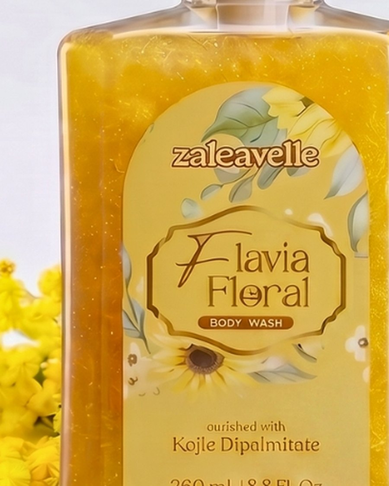
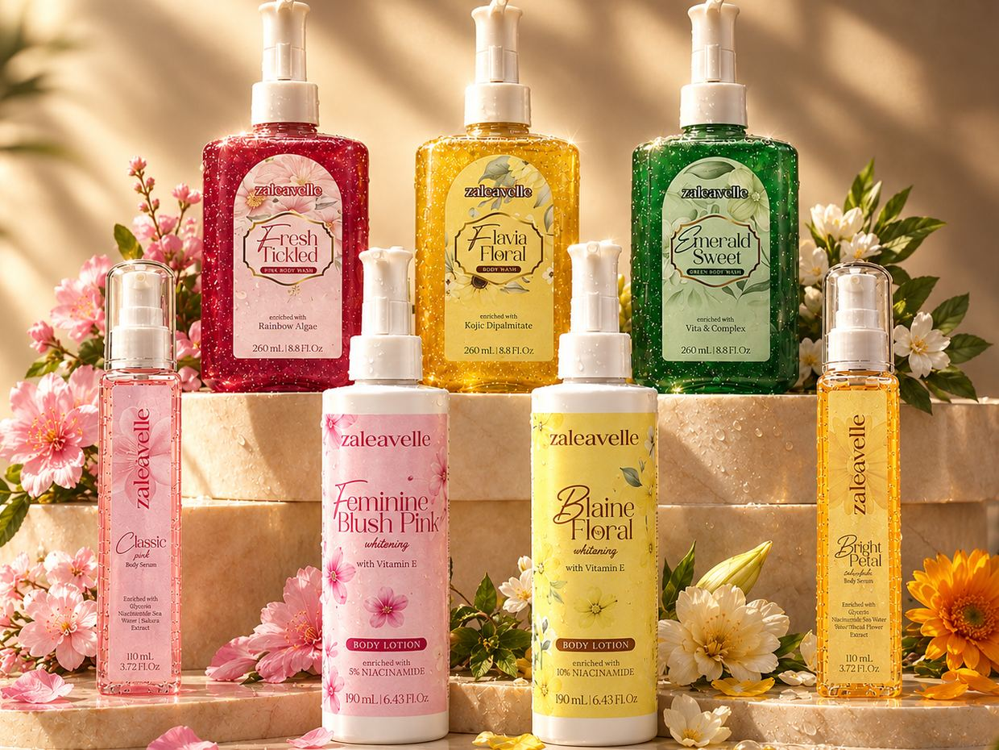
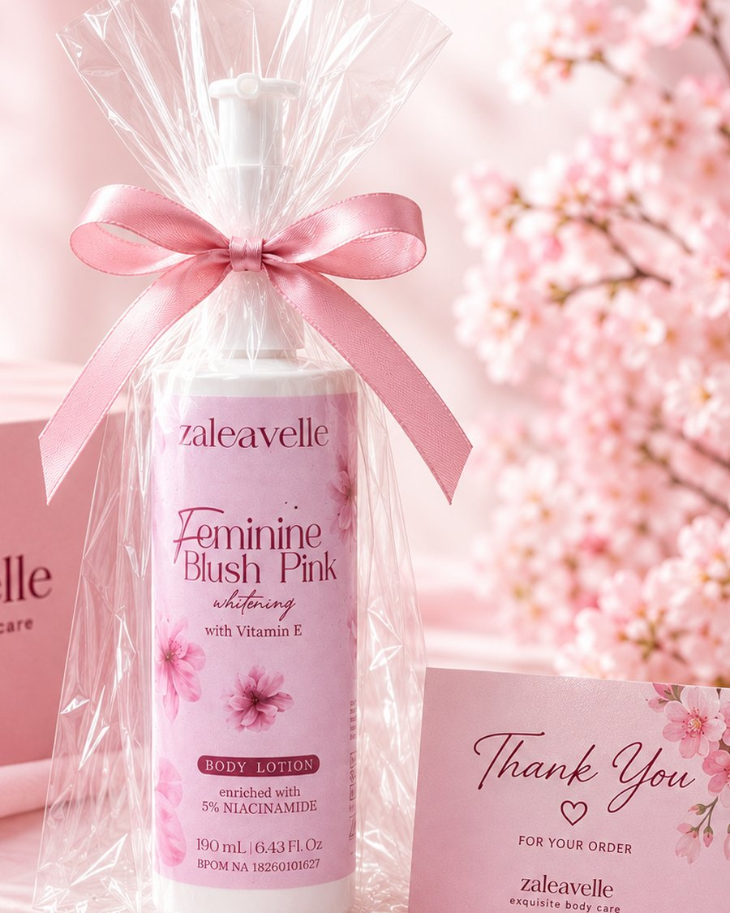
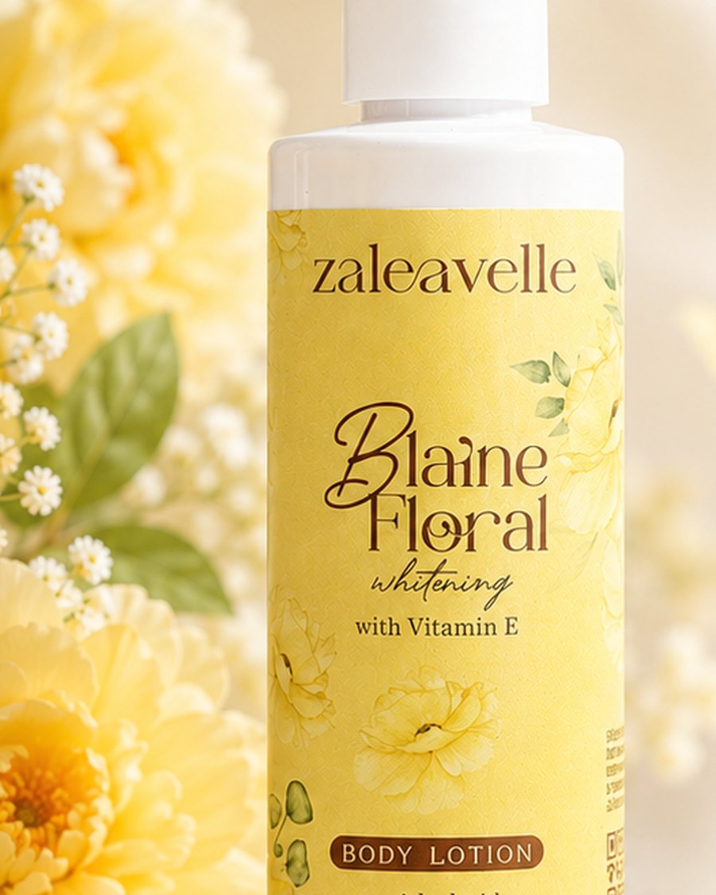
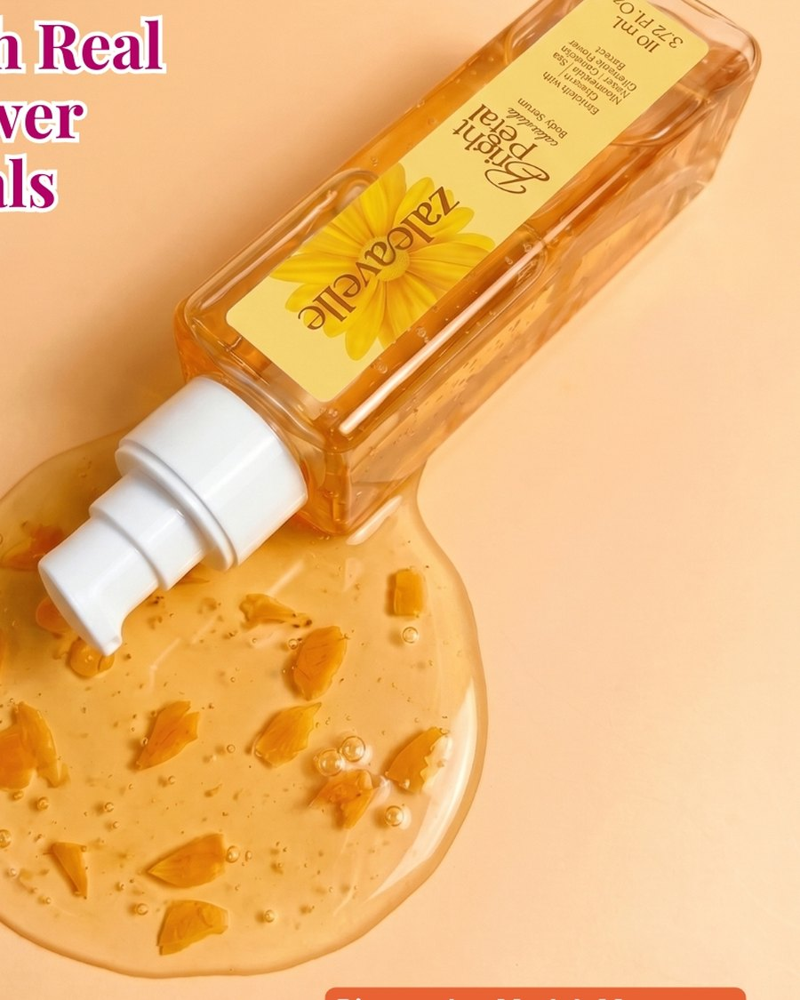
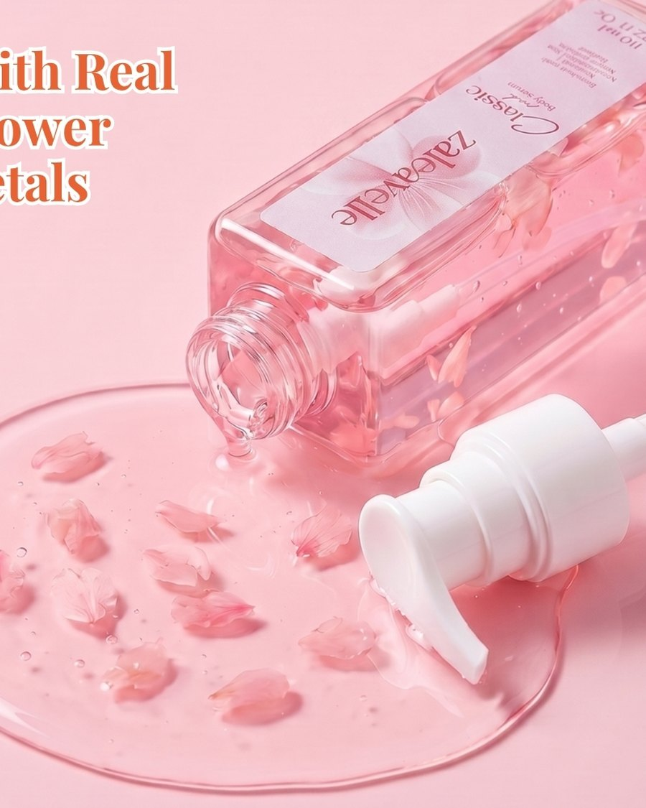
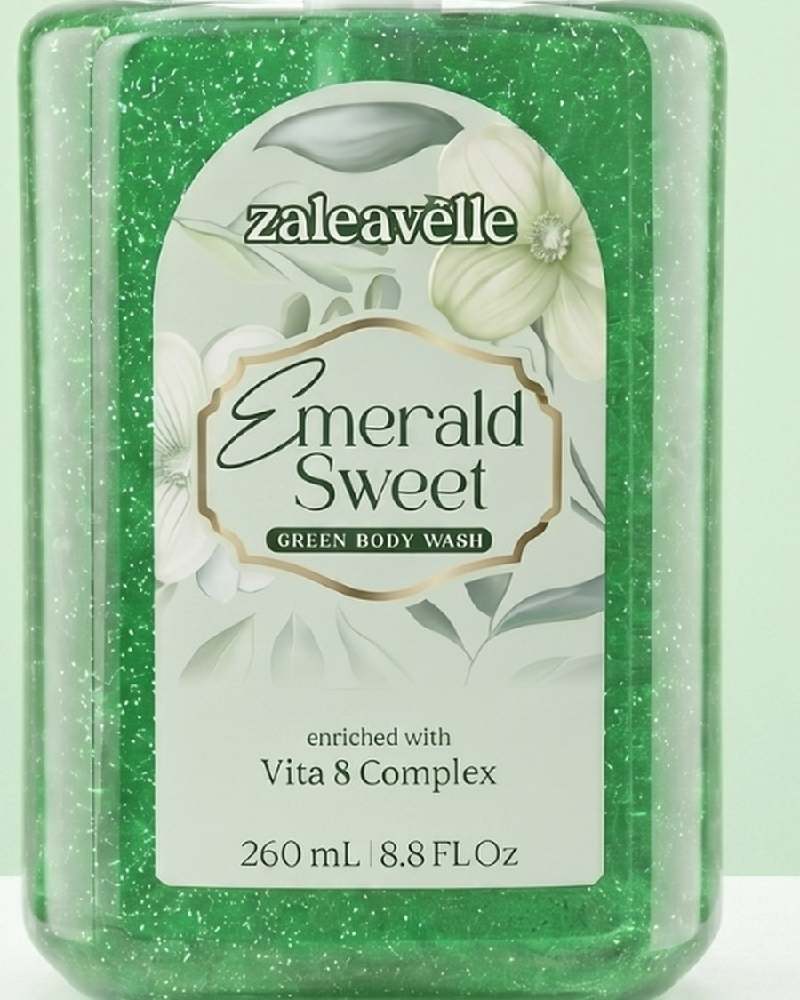
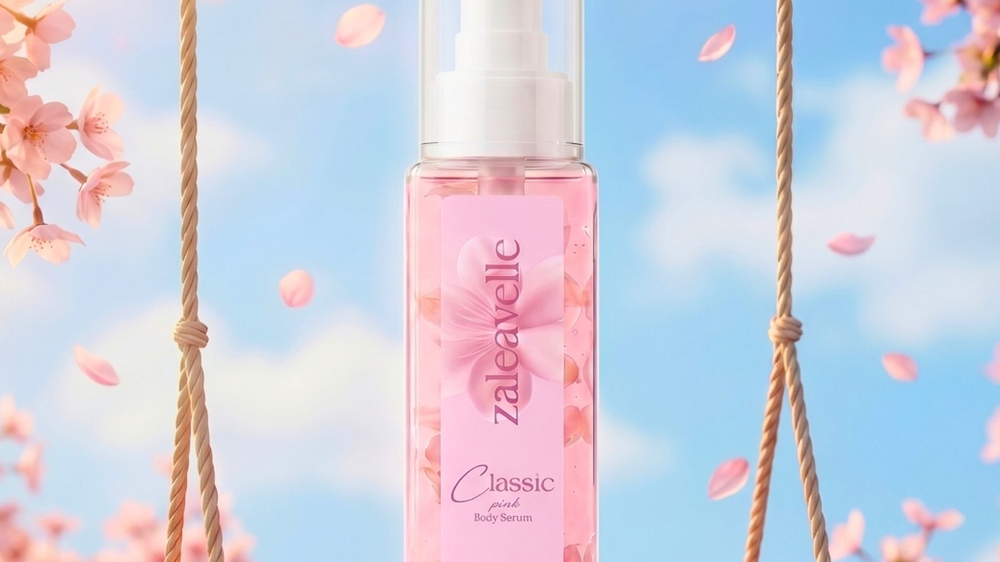
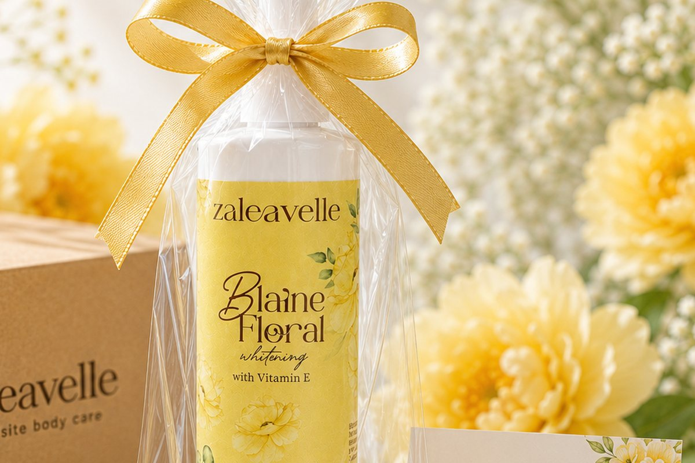

Flavia Floral
Body washNiacinamide with kojic dipalmitate. Warm, floral, a little sweet.
The range Seven formulas,one shelf.
The order Cleanse, treat,then seal.
On the label Every percentageprinted.
Registered All seven,BPOM listed.
A three-step body care routine with niacinamide, botanicals and swiftlet nest. Gentle enough for every morning.

Pick a scent, not a routine. Every variant follows the same three-step order, so anything you choose works with what you already own.

Niacinamide with kojic dipalmitate. Warm, floral, a little sweet.

5% niacinamide and swiftlet nest in a soft cherry blossom.

10% niacinamide, the flagship of the range, with swiftlet nest.

Calendula and sea water for skin that feels calm and cool.

Lightweight, fast to absorb, scented with sakura petals.

Vita 8 Complex, no intensive brightening. The gentlest one we make.
The same three steps, in the same order, every morning and every night.
Any of the three washes. The lather is light and rinses clean without stripping.
A thin layer of serum while the skin is still damp, so it has something to hold on to.
Lotion goes on last, over the serum, to lock the hydration in before you leave the bathroom.

Every active below is on the label, with the percentage printed. No claim you cannot check.
The brightening active across the range, from a gentle 2% in the washes up to 10% in Blaine Floral lotion.
Calendula and cherry blossom in the serums for calm, licorice in Fresh Tickled wash, and swiftlet nest in both lotions.
Eight amino acids that hydrate the skin barrier. It is the reason Emerald Sweet is the gentlest wash we make.
All seven variants are registered with BPOM: Flavia Floral NA 18260700236, Fresh Tickled NA 18260700237, Emerald Sweet NA 18260700238, Blaine Floral NA 18260102605, Feminine Blush Pink NA 18260101627, Bright Petal NA 18260101637, Classic Pink NA 18260101638.
Beauty was never about becoming someone else. It is about being comfortable in the skin you already have.
zaleavelle started because we wanted a body care routine we would actually finish. Not ten steps, not a cabinet full of half-used bottles. Three products, used every day, with formulas we could point to on the label.
The zaleavelle team

Seven variants: Flavia Floral, Fresh Tickled and Emerald Sweet (body wash, 260 mL); Blaine Floral and Feminine Blush Pink (body lotion, 190 mL); Bright Petal and Classic Pink (body serum, 110 mL).
Yes. Every zaleavelle variant is registered with BPOM and formulated for daily use. For sensitive skin, Emerald Sweet body wash uses a nourishing formula without an intensive brightening focus, which makes it the gentlest option in the range.
Tap Shop now on this page to check out on our official store. If you would rather talk it through first, message us on WhatsApp.
Three steps, morning and night: cleanse with body wash, treat with body serum while the skin is still damp, then seal with body lotion. The rinse-off wash is used twice daily; lotion and serum go on after showering.
Yes, all seven variants are registered with BPOM: Flavia Floral NA 18260700236, Fresh Tickled NA 18260700237, Emerald Sweet NA 18260700238, Blaine Floral NA 18260102605, Feminine Blush Pink NA 18260101627, Bright Petal NA 18260101637, Classic Pink NA 18260101638.
Message us on WhatsApp for reseller and partnership inquiries.
Routines, honest reviews and the occasional sunscreen argument. Follow along, or message us when you are deciding.
Shop now